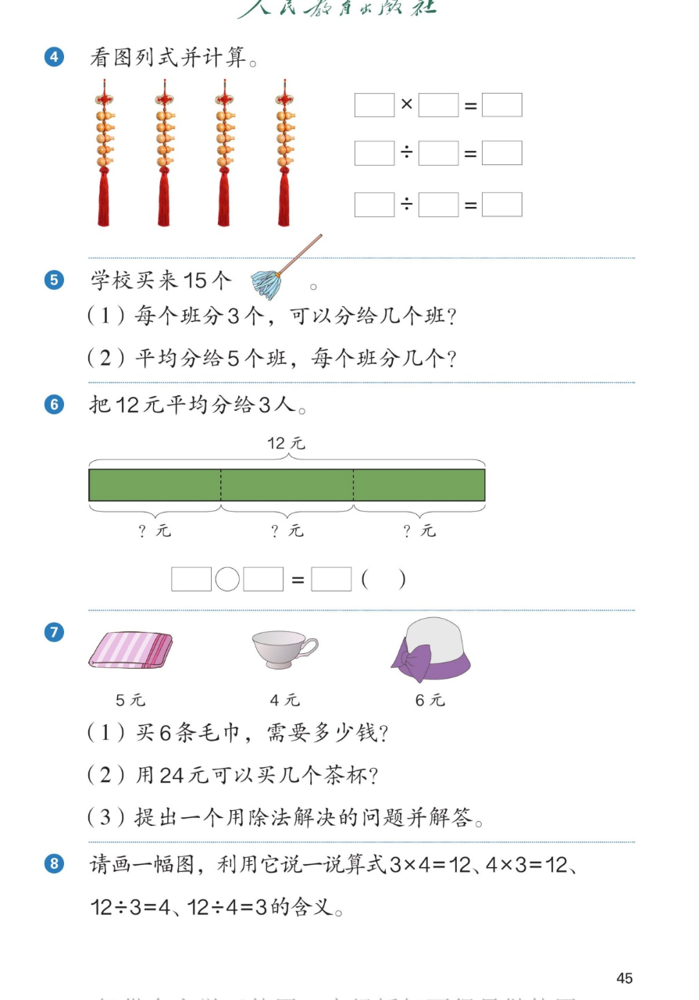

🔊 1~6的表内除法 · 课本第 45 页 · 练一练 4~8
人教版《数学》二年级上册 · 有声图文带读 · 先想后看解析
题数
6
认知
2
强化
3
拓展
1
本页重点
一图三式 · 平均分两问 · 线段图 · 购物问题 · 画图说算式
🎧 分两步学：
① 解析教材图片
——纯声音读图，读到哪一块哪一块闪动提示；关键处先倒计时让你思考，再在图片下方给出解析并朗读。
② 分层提问练习
——六道分层题（认知 / 强化 / 拓展），先思考再展开解析、朗读参考答案；这一步不再回到图片。
也可以随时点任意一句话、图上任意一块单独听；点课本文字卡还会展开答案。
教材图片（点块听读，读到哪块哪块闪）

📖 人教版《数学》二年级上册 · 课本第 45 页 · 图片仅供个人学习，版权归人民教育出版社所有
🤔 想一想（点我可跳过）
课本的文字（点句子：听读 + 看答案）
第 4 题
4 串葫芦，一图写出三个算式
看答案 ▾
4×5＝20（个）
：4 串，每串 5 个，一共 20 个；
20÷5＝4（串）
：20 个每 5 个一串，能串 4 串；
20÷4＝5（个）
：20 个平均分成 4 串，每串 5 个。
第 5 题
15 个掸子的两问
看答案 ▾
(1) 每班分 3 个：
15÷3＝5（个班）
；
(2) 平均分给 5 个班：
15÷5＝3（个）
。
🌈 一题两问正好相反：知道每份数求份数、知道份数求每份数
第 6、7 题
12 元分 3 人 + 毛巾茶杯帽子购物题
看答案 ▾
第 6 题：
12÷3＝4（元）
；
第 7 题：(1)
5×6＝30（元）
；(2)
24÷4＝6（个）
；
(3) 举例：30 元可以买几顶帽子？
30÷6＝5（顶）
。
第 8 题
画一幅图，说四个算式的含义
看答案 ▾
画 3 盘苹果、每盘 4 个：
3×4＝12 / 4×3＝12
：一共 12 个；
12÷3＝4
：平均放 3 盘，每盘 4 个；
12÷4＝3
：每 4 个一盘，能放 3 盘。
🌈 一幅图能讲一整套乘除法故事
分层提问练习（先想后看解析）
🧧
认知
看葫芦图：4 串、每串 5 个，写出一个乘法算式和两个除法算式。
看解析
🤔 想一想
解析：
4×5＝20（个）
；
20÷5＝4（串）
、
20÷4＝5（个）
。
💡 一图三式：一道乘法配两道除法
🧹
认知
15 个掸子：每个班分 3 个能分几个班？平均分给 5 个班每班几个？
看解析
🤔 想一想
解析：
每班 3 个：
15÷3＝5（个班）
；
分给 5 个班：
15÷5＝3（个）
。
💡 两个问题互为"逆向"，都用三五十五
📊
强化
把 12 元平均分给 3 人，线段图怎么帮你列算式？
看解析
🤔 想一想
解析：
线段总长表示
12 元
，平均分成
3 段
，每段就是每人分到的钱；
列式：
12÷3＝4（元）
。
💡 线段图把"平均分"画出来，一眼看出算式
🛒
强化
"买 6 条毛巾"和"24 元买茶杯"，一题用乘法一题用除法，为什么？
看解析
🤔 想一想
解析：
毛巾：知道每条 5 元和条数 6，求
一共
→ 乘法
5×6＝30（元）
；
茶杯：知道总价 24 元和每个 4 元，求
几个
→ 除法
24÷4＝6（个）
。
💡 求总数用乘法，求份数或每份数用除法
🦴
强化
有 15 根骨头、3 只小狗吃了 6 根：三个算式分别对应哪个问题？
看解析
🤔 想一想
解析：
6÷3＝2（根）
→ 吃掉的 6 根平均分，平均
每只小狗吃了
几根；
15−6＝9（根）
→ 从总数里去掉吃掉的，
还剩
几根；
15÷3＝5（根）
→ 15 根平均分给 3 只，平均
每只小狗分
几根。
💡 先想清楚算式算的是什么，再连线
🌈
拓展
画一幅自己的图，说一说 3×4=12、4×3=12、12÷3=4、12÷4=3 的含义。
看解析
🤔 想一想
解析：
例：3 排小树、每排 4 棵 →
3×4＝12 / 4×3＝12
：一共 12 棵；
12÷3＝4
：平均栽 3 排每排 4 棵；
12÷4＝3
：每 4 棵一排栽 3 排。
🌈 乘法和除法是一家人，同一幅图都能讲
① 解析教材图片
② 分层提问练习
⏹ 停止
纯声音 + 高亮跟随 · 想好才出解析
← 返回导航